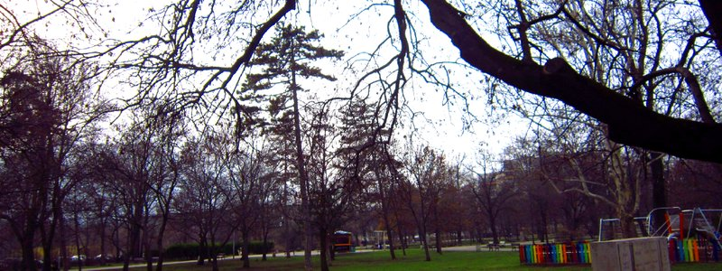

Засилката е по- важна от перфектността
Околната ни среда постоянно е подложена на тенденции и колебания.
Затова, когато попътният вятър духа в нашата посока, препоръчително е да разполагаме с кораб, капитан и бутилка ром!
Злополучно ли ще е ако се озовем с Титаник, Джак Спароу и Bacardi Арктическо грозде?
И да, и не.
Устойчивост
Когато ни чака дълъг път, не си даваме зор за да не изчерпим силите си.
Но това не значи, че трябва да кретаме едвам- едвам.
Все пак може да се пресилваме само за кратки периоди от време, защото иначе ще навредим на здравето и връзките си.
Крайностите са вредни.
Трябва да намерим баланса.
Освен това, главното е, че трябва да определим какво темпо ни е по силите да поддържаме, за да не се обезкуражаваме, но в същото време да имаме прогрес.
В света на бизнеса това се нарича устойчивост.
За да я постигнем и да не се обезкуражаваме помага да разделяме работата си на малки, но смислени части. И да работим по тях поред.
Ако дялкаме огромна скала нищо чудно да се почувстваме претоварени и затрупани. Но ако оформяме камъче по камъче, дори някое да не е точно както ни харесва скулптурата ни придобива форма и напредваме. Понякога си струва да прекараме цял следобед в писането на едно изречение, но много по-често- не.
Представяме си, че идеята трябва да излезне оформена от главата ни, но първите чернови или планове обикновено са грозни, дори и авторът им да е гениален.
Хубавото е, че в повечето случаи може да доизпипваме, поправяме и променяме в крачка. Да си набавим материал, който впоследствие да доработваме, има и още едно предимство: приближаваме се до целта.
А когато приближаваме се засилваме и ентусиазма ни расте- като мениджър преди краен срок, студент преди изпит или състезател преди финалната права.
Предимствата на засилката
Скоростта води до адреналин, който в малки дози стимулира.
В такова състояние, преди краен срок (дори изкустен, сложен от самите нас), не се плашим толкова от грешки или какво не дотам по правилата може да сторим, така че сме по- смели.
Дори като ни води емоцията, сме по- искрени и по- неподправени. Ентусиазмът привлича и заразява околните с настроение и вдъхновение.
А и когато бързаш нямаш място за несъществени неща, а само за основните.
Това е полезно за определяне на приоритетите. Вярно, че може да доведе до пренебрегване на някои детайли, но те невинаги са решаващи. Тук е мястото на преценката ви.
Например може да пишете страхотни и ценни доклади, но да са изпълнени с правописни грешки.
От друга страна, това се поправя. А като имате шаблона следващия път ще го направите по- бързо и ще сте написали вече два доклада вместо да отлагате доколкото е възможно без да имате да покажете нищо конкретно или осезаемо в резултат на усилията ви.
А план?
Разбира се, щом тръгвате без предварителен план, не се получава сериозно.
Но прекаленото доуточняване, преправяне и незадоволеност може да пречат на замаха ви. Спират ви. Пречат ви да видите възможностите отвъд хълма, който изкачвате.
Никой план не отговаря на реалността.
Обикновено, си представяме пътя напред по един начин, а нещата се оказват други. Но няма как да разберем какво ни очаква, ако седнем със скръстени ръце. За да разберем какво следва, какви възможности се отварят по- нататък, трябва да действаме.
Как?
Може да се преструваме, че се движим на бързи обороти докато това не се превърне в истина.
Как да стане това?
Аристотел смята, че добродетелите се градят първо чрез поведението. Отначало подражаваме на хората, на които се възхищаваме, за да станем като тях. Поведението ни не е само резултат, а и предпоставка. За да сме смели, трябва да извършваме смели действия, за да сме състрадателни, трябва да помагаме и така нататък.
Освен това, за да сме достатъчно мотивирани е нужно да подобрим настроението си, защото само когато сме уверени в силите си и с оптимистичен светоглед може да преминем първото препятствие, а именно започването на каквото и било ново е най- трудно. Според първия закон на Нютон всяко тяло запазва състоянието си на покой или на равномерно и праволинейно движение дотогава, докато външна сила не го изведе от това състояние.
Как да призовете тази външна сила?
За да го постигнете помага музиката, мечтан сладкиш, правенето на упражнения или разчистване и подреждане. Но за да не се увличате дайте си определено време: 5 минути за разпределяне на бумагите в папки, за да е чисто бюрото ви; 15 минути за няколко серии вдигане на тежести или кардио; само едно парче торта за да се насладите на момента на спокойствие, но без да се тъпчете.
Умората освен физическа може да е морална или липса на ентусиазъм.
Ако сте хапнали, добре отпочинали и енергични, но без желание за работа, прояснете ума си.
Друг начин да запазим инерцията се явява като си осигурим постоянни междинни награди и/ или продукти (бележки, чеклисти), които ще са ни от полза повторно нататък. Така лека- полека си изграждаме системи и работен процес, които може да ни улеснят с какъвто и казус да се сблъскаме занапред.
Също така, за да не ви доскучае трябва да си поставяте достатъчно предизвикателни задачи съразмерни на уменията ви, за да навлезем в състояние на поток (flow), описано от унгарския учен Михай Чиксентмихай. Но те не трябва да са толкова трудни, че да ни обезкуражат.
Такова състояние може да постигнем, когато чувстваме, че сме се заели с правилните, значими и интересни за нас неща и вярваме, че са ни по силите.
Начален тласък
Понякога си мислим, че няма какво толкова да кажем по дадена тема, но когато започнем да говорим не можем да спрем. Това ни подсказва, че сме се докоснали до същината, дори и на повърхността даденият въпрос да изглежда тривиално.
Но да сме дълго невдъхновени и изведнъж да ни дойде музата става рядко.
Обикновено такива прозрения идват след потапяне и замисляне над качествени и внимателно подбрани материали или непосредствени и въздействащи преживявания. Може да ви провокира някаква случка, мисъл или задача. Не отминавайте лекомислено каквото и да предизвика емоции у вас. Шансът други да чувстват същото не е малък. Такава интуиция има най- голям потенциал.
Ако създавате и споделяте или публикувате, колкото по- близко е рекламата/ услугата/ песента/ статията/ видеото до ежедневието на тези, които ще ги видят, толкова по- голям успех би имало. Вече няма такива големи хитове както когато имаше един канал, а уеб не беше измислен, но от време- навреме сигурно забелязавате същия линк или текст, споделен от няколко приятели. Значи е хит!
Също така, както дечицата, хората обичат да са в крак със служващото се и да се веселят с повод и без. Честитете нечии имен ден или преди да започне оперативката, питайте какво ново около колегите. Затова и съдържание, което е по повод празник, годишнина, честващо важни събития и прочие е по- търсено. Така се чувстваме знаещи и вещи, а и получаваме повод да заговорим някой.
А ако имате какво да кажете в разгара на екшъна, не се колебайте. Навременните забележка или напомняне ще ви донесат вятър в платната. Когато всички са преминали на друга тема, дори и най- прозорливата и важна дума няма да намери толкова благосклонни уши.
Възползвайте се от спонтанни моменти на популярни и гледани събития. Ако се занимавате с маркетинг, накарайте феновете си да се чувстват в цайтгайста, ентусиазирани и свързани с настоящия момент.
За да хванеш бика за рогата когато трябва, най- вероятно предварително си тренирал. От благоприятните възможности могат да се възползват само подготвените и смелите.
Но ви трябват и двете: подготовката, защото никой не е толкова добър в импровизациите в области, които са му напълно непознати; но трябва и увереност, защото винаги има какво още да научим, а от един момент нататък ученето чрез правене носи най- големи успехи.
Търпение или как да не се отчайваме
Успешните бизнеси и проекти започват да растат експоненциално, а в един момент- след месеци и дори години нещата започват да се случват. За жалост повечето хора се отказват преди да достигнат този момент.
Например днес Starbucks има близо 30 000 заведения, но преди десетина години са били половината от това. Преди двадесет години са били по- малко от 2000, през 1988 г. са едва 33, а при основаването си през през 1886 г.- само едно.
Сайтът на Facebook също започва от един университетски кампус, а днес около два милиарда имат регистрация.
Това не става с добавяне на малко и още малко, а с многократни, експоненциални увеличения.
Веднъж пусната по склона, снежната топка набира скорост и снежинки. Все по- бързо и все по- бързо.
Но докато стигнете до това състояние, първо трябва да сте готови да работите без окуражение особено при положение, че произведението или продукта ви все още не отговаря съвсем на стандартите ви.
Парите обичат скоростта. Парите обичат решителните действия.
Успехът също.
Не се отчайвайте ако първоначалните резултати не са впечатляващи.
Дори и да не успеете
За следващия път вече имате опит, текстове на имейли и послания (реклами), отговори на най- честите въпроси и стратегия, подсказана от малцината клиенти, които са видяли потенциала ви.
Затова проверете откъде идват тези магични същества и удвоете усилията си в тази посока. Питайте хората, които вече са решили да ви се доверят, защо: препоръчал ли ви е някой познат, видяли ли са поста ви в Pinterest или Instagram, намерили са ви случайно в Google или някоя Facebook група?
Затова не се бойте да започнете с подръчни средства, до които имате достъп. Нищо че процесът ви може да изглежда разхвърлян и небрежен. Ако не го направите, няма да се учите и няма да създадете материалите, които са ви нужни.
В началото, не се бойте да правите нещата едно по едно за всеки клиент- опаковайте и пращайте по пощата собственоръчно, пращайте персонализирани препоръки на имейл, обработвайте Gmail формуляри, които може лесно да добавите към сайта ви дори да не са толкова красиви.
Обработвайте бързо запитвания, ако предлагате някакви услуги. Ако направите грешка, хората разбират, ако се извините и я оправите. Но ако се бавите да им отговорите ще преминат на следващия вариант.
Никой не обича да чака на опашка, а вече не се и налага. През комунизма магазините може и да са били празни, но сега няма липса нито на вещи, нито на забавление.
Всичко се случва сега. Годините труд, които са предпоставка и подплата за успеха са невидими и напразни, ако не скочим.
Когато сме изправени пред краен срок, виждаме по- ясно какво е същественото.
За да действате със засилка, трябва непрекъснато да опростявате, да сте се замислили предварително за принципите си, защото те изясняват и ускоряват поведението ви в непредвидените ситуации, които винаги изникват и най- вече да действате.
Американската писателка Джоди Пико казва: “Винаги може да редактирате лоша страница. Не може да редактирате празна страница.”.
Какво ще напишете на вашата страница?